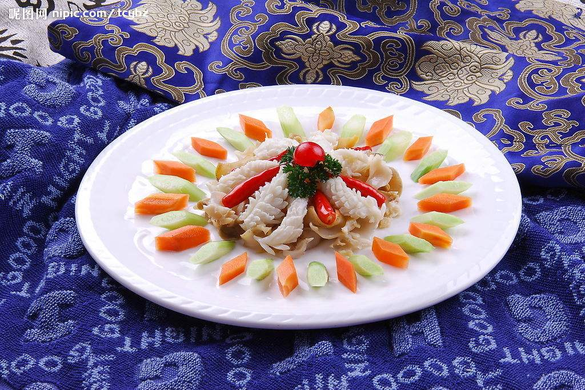

粤菜介绍
粤菜即广东菜，是中国传统四大菜系、八大菜系之一。狭义上的粤菜指广州府菜，也就是广州菜，此处的广州府含：顺(德) ,南(海) ,番(禺) 。广义上的粤菜又称“潮粤菜”，由广州菜、潮州菜、东江菜发展而成 ，三大菜系类型各异，其中广州菜和东江菜近似。粤菜因其选料严格、做工精细、中西结合、质鲜味美、养生保健等特点而名扬天下。在中国，自古有“食在广州，厨出凤城(顺德)”的民间谚语，以赞扬南粤饮食文化之丰富、深厚。 
广州菜源远流长，历史悠久。它同其他地区的饮食和菜系一样，都有着中国饮食文化的共同性。 早在远古，岭南古越族就与中原楚地有着密切的交往。随着历史变迁和朝代更替，许多中原人为逃避战乱而南渡， 汉越两族日渐融合。中原文化的南移，中原饮食制作的技艺、炊具、食具和百越农渔丰富物产结合，这就是粤式饮食的起源。粤菜起源于汉代，就是凭借这段历史来说的。
广州菜也追求“新派”。但几千年所形成的选料广博奇杂，菜肴讲究鲜、爽、嫩、滑的南国风味对创新的变化影响颇深。 “万变不离其中”，传统的美点薄皮鲜虾饺、凤爪、卤牛杂、薄脆、白糖沙翁、德昌咸煎饼、大良崩砂等更是历久不衰。 这表明广州菜系植根的土壤是十分深厚的。粤菜用量精而细，配料多而巧，装饰美而艳，而且善于在模仿中创新，品种繁多，1965年“广州名菜美点展览会”介绍的就有5457种之多。 广州菜广采“京都风味”，“姑苏风味”和“扬州炒卖”之长，贯通中西，扬名海内外。